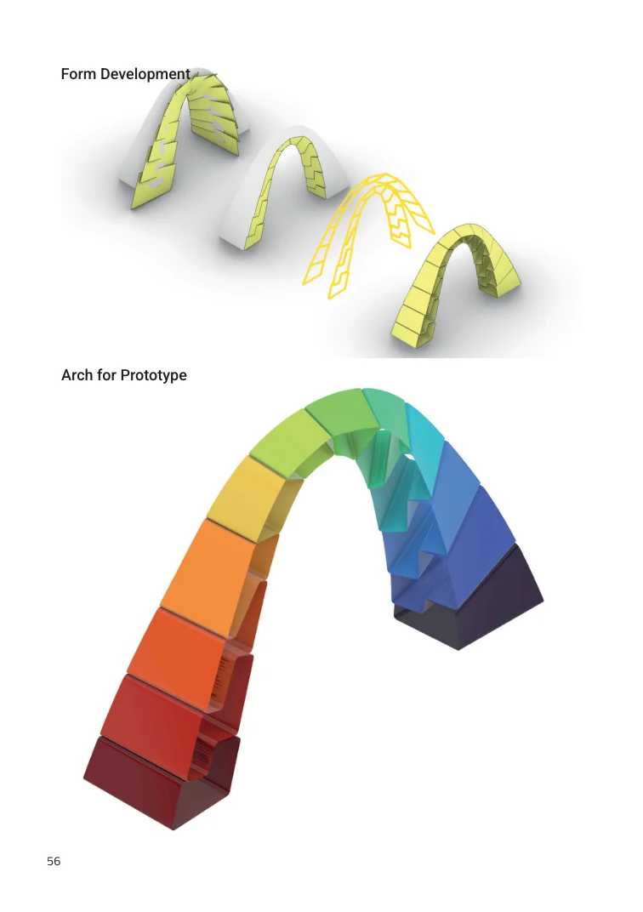
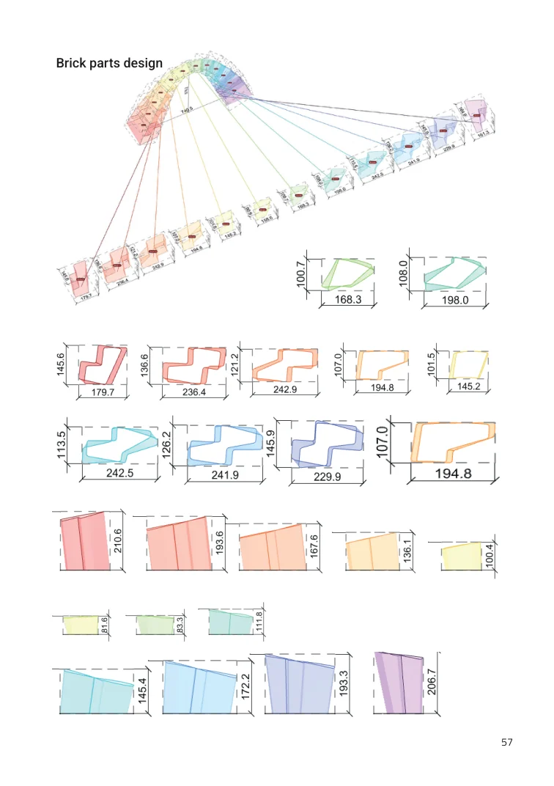
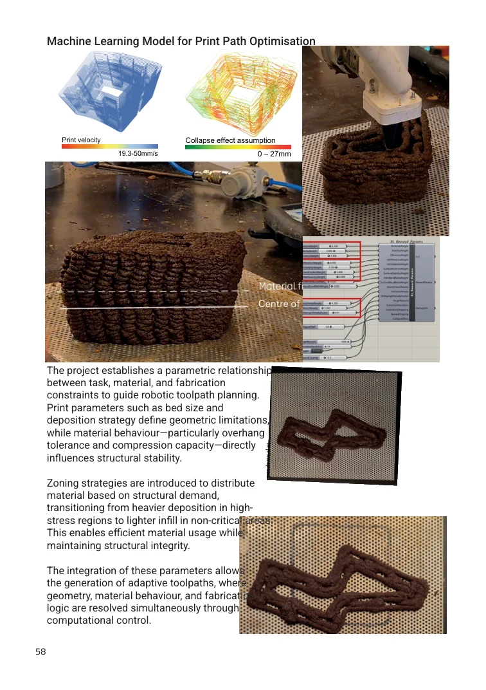
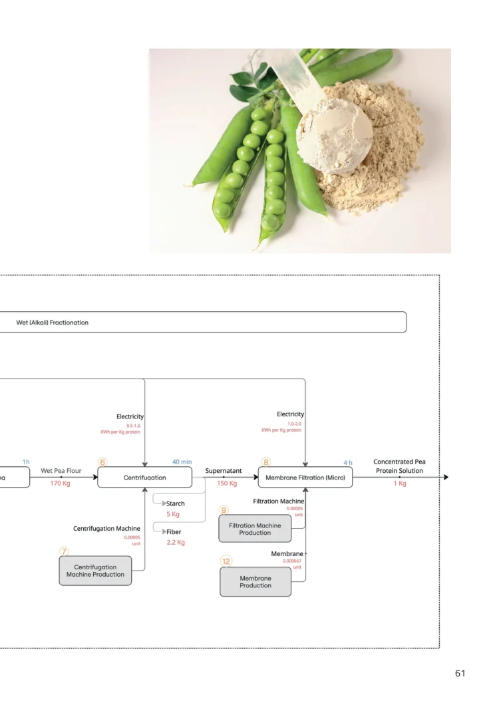
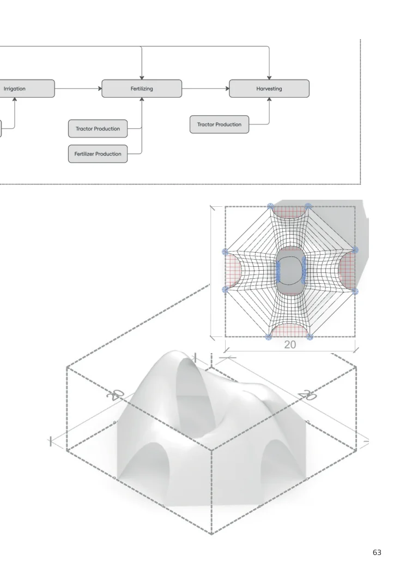

CITA · Computation in Architecture · Semester 2
Python for Architectural Computation
Ten exercises connecting code, data, images and geometry to architectural questions.

This coursework portfolio traces my progression from Python fundamentals to computational methods that can inform design. Each exercise turns a different kind of information—numbers, environmental declarations, pixels, geometry or networks—into something that can be classified, measured or spatially interpreted.
The sequence culminates in machine-learning and fabrication studies. GhPython links code directly to Rhino and Grasshopper geometry, while KMeans and self-organising maps reveal families within a generated dataset. Later workshops apply the same computational thinking to metro networks, robotic biopolymer printing and life-cycle assessment.
01 · Generative fields
ASCII characters become a changing environmental field.
A vertical gradient, a sine wave and controlled noise are combined into a scalar field. Instead of drawing pixels, the script maps low-to-high values onto characters of increasing visual density. Repeated time steps turn this simple rule set into a terminal animation that reads like changing radiation.

02 · Conditionals, loops and lists
Learning to control decisions, repetition and classification.
Three short scripts establish the logic used throughout the later work: counting up or down from a random value, sorting numbers by modular rules, and filtering random lists by index and threshold. The important lesson is procedural order—each value follows the first condition it satisfies.

03 · EPD data with GeoPandas
From a concrete spreadsheet to an environmental map.
Ready-mix concrete Environmental Product Declaration data is cleaned and normalised before being grouped by company, mix and US state. The analysis compares Global Warming Potential with freshwater consumption, then joins company counts to geographic boundaries so regional concentrations can be read spatially.

04 · Image processing and pose estimation
Calibrating a camera before using images as measurements.
OpenCV detects internal corners in multiple checkerboard photographs to estimate the camera matrix and lens distortion. After undistortion, the known checkerboard plane supports pose estimation and the projection of 3D axes. Thresholding, contours and a millimetre-per-pixel scale then turn object silhouettes into approximate real-world dimensions.


05 · Point clouds
Reconstructing an image as spatial, colour-filtered data.
Every image pixel is converted into a coloured 3D point. HSV filters isolate selected colour ranges, allowing partial clouds to be extracted and enclosed by a bounding box. The exercise reframes a familiar image as geometry that can be queried, transformed and selectively reconstructed.


06 · Dataset creation with GhPython
Generating geometry and its metadata together.
A GhPython workflow produces many triangle variations inside Grasshopper and records their angles, edge lengths, hypotenuse, perimeter, area and point coordinates. Because geometry and features are generated together, the output becomes a structured dataset ready for analysis rather than a loose collection of models.


07 · KMeans and self-organising maps
Machine learning reveals families and gaps in the design space.
After scaling the triangle features, KMeans divides the dataset into ten geometric families and identifies a medoid as a representative of each cluster. A correlation matrix tests which parameters carry overlapping information. Self-organising maps then arrange the same data on a 10 × 10 grid: the raw result collapses around high-magnitude features, while standard scaling produces a more legible spread of forms.
Comparing the 100 SOM vectors with the original dataset found no exact matches at the chosen tolerance. That makes the SOM useful as a generative map: it interpolates between known samples instead of merely retrieving them.


08 · Copenhagen metro with NetworkX
Reading an urban transport system as a graph.
Stations become nodes, direct connections become edges, and journeys become paths. NetworkX compares the existing Copenhagen Metro with a proposed 2035 scenario including M5 through connectivity, shortest paths and centrality. Footfall values used in the exercise are simulated weights—not observed passenger counts—so the study demonstrates method rather than making a real ridership claim.

09 · Biopol robotic 3D printing
Designing with the limits of a wet, bio-based material.
This workshop links form development to robotic deposition. Arch and brick studies test non-planar paths, overhangs and differentiated surface texture. Toolpaths are zoned by structural demand, while print speed and material flow are related to density, pressure and the risk of collapse. A proposed machine-learning workflow uses those fabrication variables to inform path optimisation.



10 · Life-cycle assessment
Extending computation from geometry to material consequence.
The final exercise maps the biopolymer printing system as a life cycle: agricultural feedstock, material preparation, robotic fabrication, use and end-of-life pathways. The diagrams connect material sourcing and production processes to the printed geometry, establishing a framework for evaluating environmental impact alongside structural and fabrication decisions.


Credits
Exercises 01–08 were completed by Naitik Sharma in Semester 2 of CITAstudio: Computation in Architecture under Dr Gabriella Rossi.
Biopol 3D Printing workshop tutor: Carl Eppinger. LCA for Biopolymer 3D Printing workshop tutor: Nadja Gaudillière-Jami. All diagrams and outputs shown here are drawn from the submitted coursework portfolio.